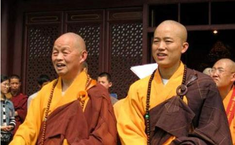

静慧法师（1916-2001），现代高僧大德。单字宽，俗名楼明达，小名根发，浙江象山石浦镇人。从1932年在
法师出生于一个虔信
14岁那年，法师投苏州八塔寺，礼授松法师的徒弟黄岩多福寺从参法师座下披剃，法名“静慧”。旋至苏州报恩寺为茶役。1931年，又返石浦西龙庵潜修。翌年2月，至天台山国清寺受具足戒，正式成为一名台宗僧人，那一年静慧16岁。当时，台宗名宿静权大法师正在国清寺创建天台山佛学研究社，静慧得以亲近静权大法师，受其亲炙，研习天台教观，并随侍协助静公创建天台宗佛学研究社，使之解行精进。1941年慧莲和尚请为国清寺副讲。期间习天台教观及《
1957年赴北京中国佛学院（首届）深造，系统学习天台教观和佛教知识。三年学成归寺，1959年回国清寺至1968年期间，历任副讲、主讲、修持股长等职，被澹云和尚请为首座，为主讲法师。1984年，为培育僧才，国清寺恢复天台佛学研究社，师以古稀之年任主讲。法师几乎每天坚持在妙法堂讲经，并于每年七月的
静慧法师以《妙法莲华经》中的常不轻
静慧老法师年青时即讷于言、慎于事，中年以后，更是虔诚礼诵、阐讲《妙法莲华经》、《楞严经》、《地藏经》、《阿弥陀经》等法门典籍。教依天台，行归净土，坚持弘宗演教、台净双修。他解行并进，
静慧法师在少年时期，就爱好梵呗唱念，除了学会五堂功课以外，特别精通《水陆仪规》。天台山佛教可唱诵的经文约95篇，其中赞偈类22篇、朝暮课诵39篇、忏类9篇、瑜伽焰口9篇、水陆法会16篇（含乐器曲牌）。但由于缺乏文字资料，在民国之前，天台山
静慧法师在水陆、焰口和经忏唱诵中，经过几十年的磨励，形成了自己的风格。听到过静慧法师唱诵的人，都无不被他那无比清越纯真的“童子音”所感动，在他的唱腔中没有一丝杂音，充满了清净和慈悲，超凡脱俗，有如天籁。这是一种真正的出世
静慧法师以提携后学、培养弘法人才为已任，坚持不懈讲经
临终前，老法师仍念念不忘弘法利生，在弥留之际，他还对身边的人说：“我要去妙法堂讲经、我要去妙法堂讲经……”
静慧法师身材瘦小，清静慈祥。由于长期缩衣节食，晨昏苦修，加上文革期间的摧残，落下了严重的胃病。1996年又不慎致跌，几乎半身不遂。但是病魔丝毫不能动摇他修学的道心，他将病痛作锤炼，内心安然受用，勇猛精进，每天不仅坚持讲经弘法，还坚持上殿过堂，参加早晚功课，主持寺内
还有一个雷打不动的法事，静慧法师一直坚持到生命的最后一刻，那就是“放蒙山”。 “放蒙山”即蒙山施食，通过诵蒙山施食文、持诵
静慧法师大慈大悲，他的平等理念和忍辱功夫一直为人称道。他视一切众生为佛，无论贫富贵贱，一视同仁，一样地礼敬和关切。在他晚年时，他的声望日隆，前来皈依的四方弟子数以万计。每天都有一批批纷至沓来的信众拜访他，他有求必应，不顾自己年事已高，身体虚弱，都不厌其烦地一一接待。不管你是达官贵人还是平头百姓，无论你是带着礼物还是空手而来，他一视同仁，一样地劝你戒杀、
静慧法师对每个人都恭敬有礼，每经一事，必向人口念“阿弥陀佛”，合掌致意。令人称奇的是，即使对自己身边的徒弟，他都恭敬合掌，并以“法师”尊称。
皈依弟子数以万计，见有来访者，必劝以戒杀、念佛、放生，多行善事。毕生严以律己，生活清苦，凡有供养多用于弘化慈善之事。
静慧系浙江省佛教协会常务理事，台州市佛教协会名誉会长。 2001年12月30日16时30分（阿弥陀佛圣诞前一天），法师于天台山国清寺安详示寂，世寿八十六，法腊七十二。往生后坐在
在老法师的追悼回向法会上，成千上万的四方信众和弟子都赶赴台宗祖庭国清寺为老法师送行。国清寺住持可明大和尚在悼词中说：“今天，我们会聚一堂，深切悼念德高望重的静慧老法师，缅怀他一生为弘扬天台教观，对天台山佛教及至
静慧法师教依天台，行归净土，坚持弘宗演教、台净双修。他的一生，就是